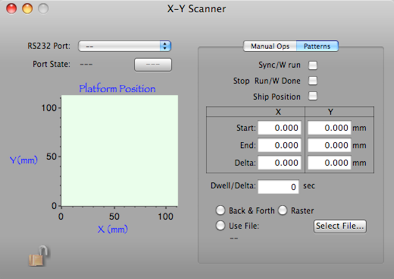
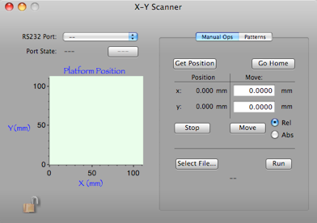
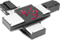
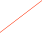

Newmark X/Y Controller




The Newmark controller is a stepping motor controller. ORCA currently only supports two of the four motors connected to a X/Y scanning platform. Connection to ORCA is via a USB to serial convertor, a typical example would be one of the units from Keyspan.Select the RS-232 port and open/close the connection


Motion commands can be run from a command file
Shows the current platform position and the last 100 positions
Current position and amount to move, either absolute or relative distance
X and Y start and end positions when running a sweep pattern. Delta is distance between positions



Option to start sweep when run starts
Option to stop run when sweep is done
Option to put position records in the data stream
The number of seconds to pause at each position


Back and Forth Pattern
Raster Pattern
Type of motion profile. Note that the profile can be a set of commands from a file.
X Start
X End
Y Start
Y End
Y Delta
Command files
A command file can be read in make the motors move in a custom pattern. Typical commands are:
aa ml0,5.3 go; <---Move a relative distance from the current point (i.e. +0x and +5.3y)
aa mt5.2,3.1 go; <---Move to an absolute position (i.e. 5.2x and 3.1y)
Commands are delimited by ‘;’. Any commands recognized by the controller can be used. Unfortunately a manual is not available at this time. If you have access to the ORCA source code you can pick out the commands from the ORSYScannerModel.m file.
Position data record:
xxxx xxxx xxxx xxxx xxxx xxxx xxxx xxxx
^^^^ ^^^^ ^^^^ ^^-----------------------data id
^^ ^^^^ ^^^^ ^^^^ ^^^^-length in longs (always 5)
xxxx xxxx xxxx xxxx xxxx xxxx xxxx xxxx
^^^^ ^^^^ ^^^^ ^^^^ ^^^^ ^^^^ ^^^^ ^^^^- UT time
xxxx xxxx xxxx xxxx xxxx xxxx xxxx xxxx- pressure chan 0 encoded as a float
^ -------------------- 1 = running, 0 = stopped
^^^^ ^^^^ ^^^^ ^^^^- unique motor ID (i.e. 0,1,2,3... etc)
xxxx xxxx xxxx xxxx xxxx xxxx xxxx xxxx x position (encoded as float)
xxxx xxxx xxxx xxxx xxxx xxxx xxxx xxxx y position (encoded as float)